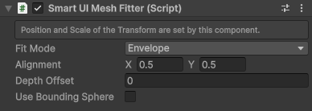
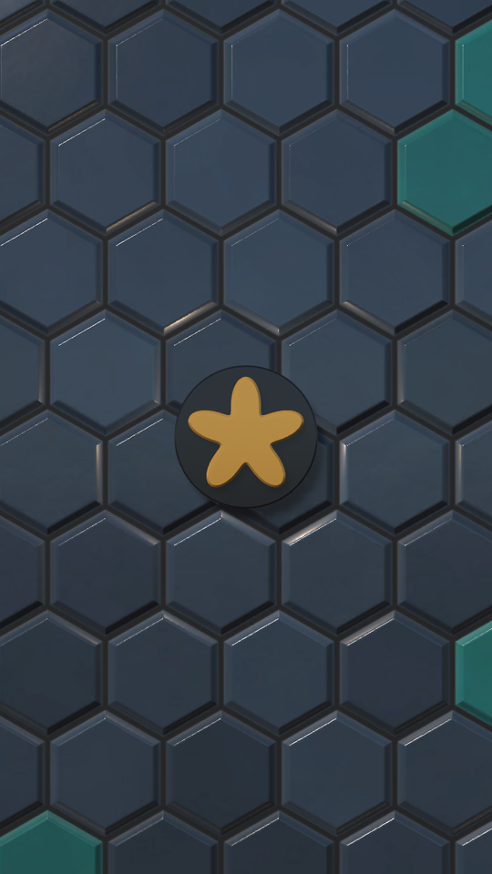

Smart UI Mesh Fitter component
Sizes and places a 3D object, for example a mesh or a whole model, inside the parent Rect Transform, so it scales with the UI like any UI element. Typical uses are a lit, normal-mapped menu background that reacts to lights, a 3D title that lifts off that background and casts a real shadow on it, spinning coins and items in the slots of a shop, and an item inspector where the player turns an item.
Add the component to the object and place the object under a Rect Transform, usually inside a UI Scaler. The canvas must be Screen Space Camera: Screen Space Overlay canvases do not draw 3D objects, and World Space canvases are not supported by the Smart UI Canvas Scaler.

| Field | Description |
|---|---|
| Fit Mode | Fit: the object keeps its proportions and fits inside the parent. Envelope: the object keeps its proportions and covers the parent. Stretch: the object is stretched to the width and the height of the parent, for example a quad used as a background. |
| Alignment | Where the object sits inside the parent, from (0, 0) bottom left to (1, 1) top right. (0.5, 0.5) centers it, (0.5, 0) keeps it on the bottom edge. Not used by Stretch. |
| Depth Offset | How far the object is lifted from the parent toward the camera, in UI units. 0 puts the back of the object on the parent. It scales together with the UI, so a lifted object keeps the same look and the same shadow on every screen. |
| Use Bounding Sphere | Fit the sphere around the object instead of its box. The size then stays the same while a child of the object rotates, for example a spinning item in a shop slot. Suits roughly round objects: a wide object, such as a title, becomes much smaller. Not used by Stretch. Not needed with Smart UI Framing Bounds: their typed-in volume does not turn with the object, so turn it off. |
How it works
After the UI Scalers are updated each frame, the component measures the bounds of all enabled Renderers on its GameObject and its children, scales the object so the bounds fit the parent, and moves it so the bounds sit at the Alignment point with their back on the parent. The pivot of the model does not matter: a model with its pivot at its base is placed the same way as one with its pivot in its middle.
The Position and the Scale of the Transform are set by the component, so they cannot be edited by hand. Use Depth Offset instead of the Z position: UI Scalers scale the width and the height of their content but not its depth, so a Z position set by hand would stay the same while the object grows or shrinks with the UI. The component scales the depth together with the width and the height, so the object keeps its shape.
A 3D background that covers the screen
Use a quad with a lit material and the aspect ratio of its texture, and set its Mesh Fitter to Envelope, so the background covers the screen without being stretched. Unity's built-in Quad is square: use a mesh of your own, or put the Quad on a child object scaled to the texture's aspect ratio.
Place the quad directly under the Canvas, outside the UI Scaler. The Canvas covers the whole screen, so the background also covers the area outside the safe area. When the background has to stay inside a UI Scaler, for example in a prefab, place it under a Rect Transform with a Smart UI Expander that expands to all Canvas borders.
3D objects in front of the background, such as a title, can cast real shadows on it: give their Mesh Fitter a Depth Offset to lift them off the background, and let their Renderers cast shadows.
Demo 13 on a 16:9 and a 9:16 screen: the lit wall covers the screen at the proportions of its texture, and the emblem in front of it casts a shadow on the wall.


Good to know
- Rotate a child of the object, not the object itself. UI Scalers do not scale depth, so rotating the object around X or Y can skew it. Rotation around Z is fine.
- The Inspector warns when the object is not under a Rect Transform, when the canvas is Screen Space Overlay, when the object itself is rotated around X or Y and when no Renderer is found.
- The object is a normal 3D object in the scene: lights, shadows, layers and post processing work as usual. Make sure the camera's shadow distance covers the canvas plane distance.
Rotating and animated objects
- Spinning items, such as a coin next to a counter or an item in a shop slot: turn on Use Bounding Sphere and rotate a child object. The sphere looks the same from every side, so the size stays the same while the item turns.
- Tilted titles and logos: rotate a child object to the angle you want. The tilted object is measured as it is turned and fitted into its slot, and the camera of the canvas shows it in perspective.
- Moving or animated models, such as a swaying title or a waving mascot: animations change the measured Renderer bounds every frame, so the model would grow and shrink. Add Smart UI Framing Bounds and type in the volume the movement needs. The Mesh Fitter then fits that volume instead of measuring the Renderers, and the model keeps the same size.
- An item inspector: the player turns a child object by dragging, and the item is zoomed by resizing its slot.
Tip
Not sure whether you need the Mesh Fitter or the Smart UI World Follower? See 3D objects in the UI.